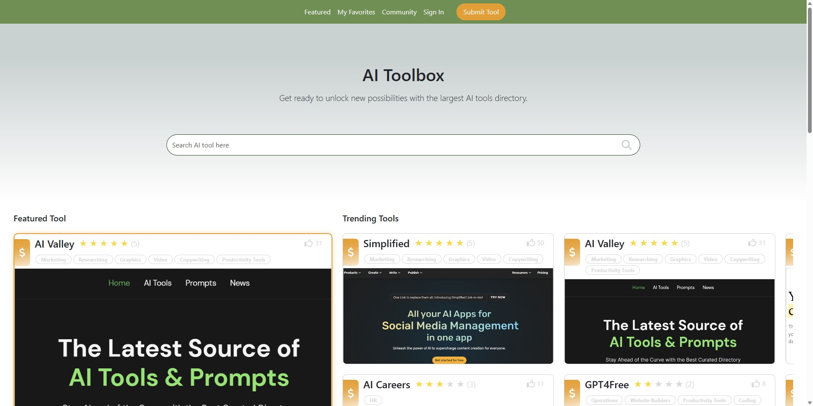
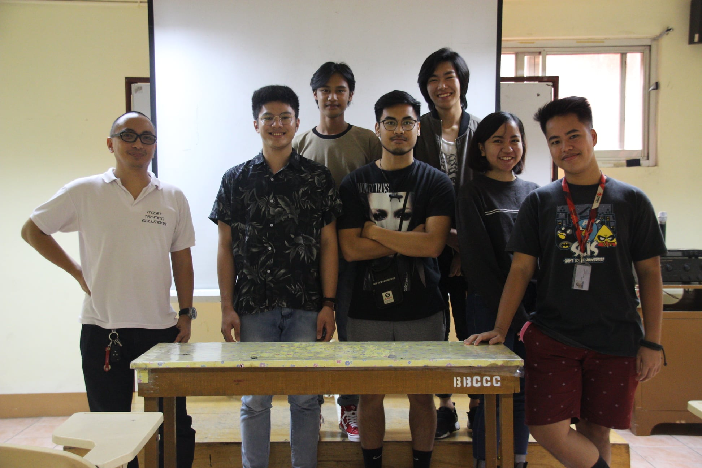

My Software Career Journey (so far).
I am an Information Technology graduate from Saint Louis University (Baguio City). I started my career in the software industry as a Software Analyst;
I enjoyed, improved, and learned a lot in how to handle people and how to compose myself at stressful situations because of this role,
little did I know that this was to set myself to step outside my shell. I saw an opportunity to start my Software Developer career on the same
company and did not expect to get accepted on my 2nd try applying for the position.
The first few weeks was a challenge when I started my software developer career, considering that I haven't done any coding practice ever
since I graduated from university. I even started to doubt myself because of the challenges, but knowing who I truely am, I still faced those challenges. As time
passes and got the opportunity to work along side with amazing developers this made my path more interesting and fun, which is something I did not expect on a corporate job.
There are a lot of factors that ignited my passion for software development, but the biggest impact in my career so far to do better at this role was
actually the people I had the chance to work with and the new learnings that I chance upon on every new task or project.
I am a person who loves learning more from people and I'm someone who always strive to have quality outputs for work. I also appreciate
working with teams and learning from them. Outside work, I'm someone who loves playing FPS and single player games. I also love cooking meals
for myself and I also jog occasionally, and trying to start a new hobby of reading books.
Experiences
Tools & Languages

Software Developer
I have work experience along with HTML, CSS, JavaScript, C#, and SnowFlake; worked on internal/client customizations and trainings for non-technical employees.
Key Responsibilities:
Collaborate with Project Managers with regards to client requirments.
Producing UI/UX prototypes for internal or client dashboards.
Building efficient, reuseable, and clean code.
Generating unit tests for dashboard before releasing.
Assisting non-technical colleagues with regards to internal technical platforms.
Creating documentations for dashboards for technical and non-technical view.
Collaborating, brainstorming, and giving a helping hand to fellow developers.

Software Analyst
Started my career as a Software Analyst. Worked as a technical support, documenting, and assisting clients regarding software products.
Key Responsibilities:
Collaborating and brainstorming with Team Leads with regards to complex client issues.
Taking inbound calls from clients and assisting them with regards to the software platform we offer.
Assist clients with their issue/concern with the software product.
Document issues and troubleshoot them as fast and efficient as possible.
Collaborating with diverse teams with regards to cross-functional issues.

Content Management - Wordpress
Worked on content management and data validation for a restaurant website during my Internship.
Key Responsibilities:
Validate data and information to be added on the WordPress website.
Making adjustments to website based from client feedback.
Making sure WordPress components are running smoothly.
Adding customized JavaScript if needed.

Recruitment System
Worked on front-end development (HTML, CSS, JavaScript, and BootStrap) for our thesis project for the Bureau of Fire Protection Cordillera (BFP).
Key Responsibilities:
Producing UI/UX for the recruitment website.
Converting UI/UX prototype to actual front-end code using BootStrap4 plus additional customized HTML, CSS, and JavaScript code.
Testing recruitment forms if data and information is being passed correctly to the Database (phpMyAdmin).
Producing technical and non-technical documentation for the website.
Canva Folio
Tried to working on Canva for my initial portfolio and here's the end result: Canva Folio view.
Figma UI Design
I created a simple landing page using Figma for a coffee shop that's based on Baguio City, PH. Figma view: Kape-an landing page.

AI Search Box
This is a project that I have collaborated with a UI/UX designer, a quick summary of this project is that this allows a user to quickly search of an AI tool that based on their needs. Github: AI Search Box repository.
Tech Stack:
-
Front-end Technologies/s:
HTML 5, CSS 3, and JavaScript
Front-end Framework: Vue JS
Front-end Styling: Bootstrap 4 and SASS
-
Back-end Technologies/s:
Programming Language: Node.js
Web Framework: Express.js
APIs: RESTful API
-
Database: PostgreSQL (RDMS)
-
Hosting: Github Pages
-
Version Control: Git
-
Collaboration Tool: BaseCamp
Get In Touch
Thank you for checking my portfolio! I hope you found something that's interesting about me. Please feel free to contact me if you have any inquiries.
-
Address
#366 Purok 2
Lower West, Monticello Camp 7
Baguio City 2600, Philippines
-
Phone
(+63)916-3438-407
-
Phone
(074)661-2124
-
Email
laban.chad@gmail.com


{kind=link}
{kind=link}
{kind=link}
{kind=link}